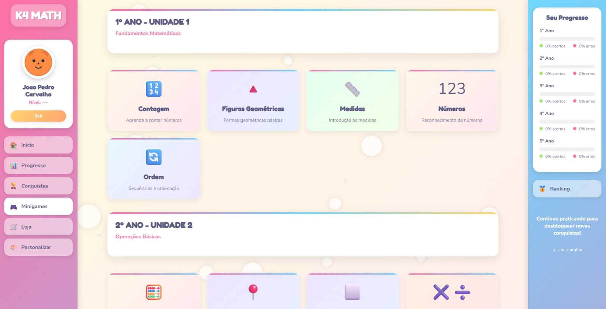
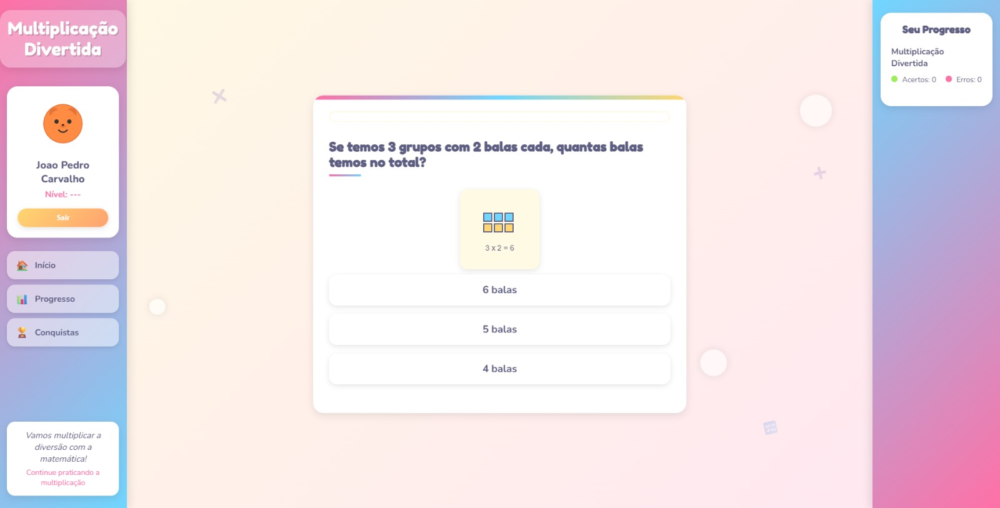
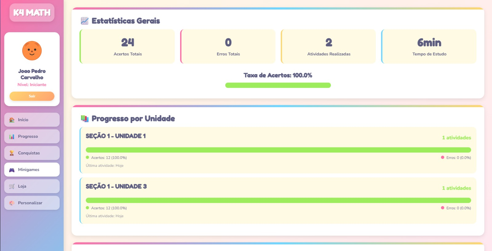
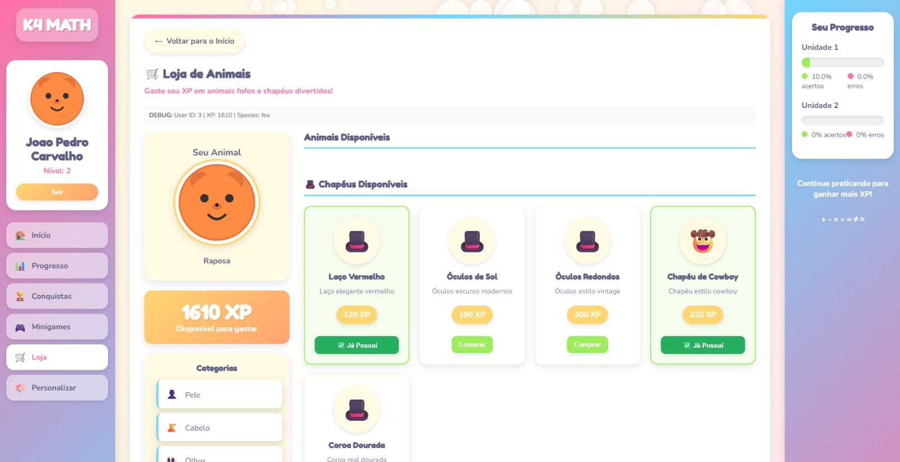
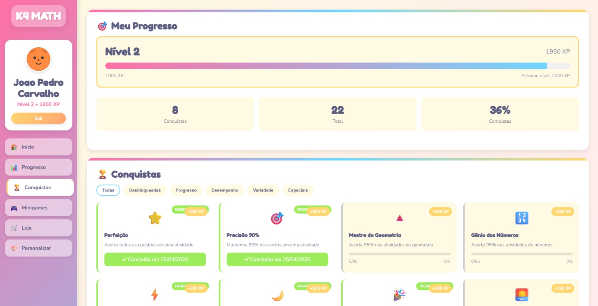

K4Math - Matemática Gamificada
Plataforma de aprendizado de matemática, com sistema completo de gamificação, progresso e conquistas.

K4Math - Visão Geral
O K4Math é uma plataforma completa de aprendizado de matemática inspirada no Duolingo, desenvolvida para tornar o estudo da matemática mais divertido e envolvente através de gamificação. O sistema conta com criação de contas, progressão por níveis, personalização de avatares e sistema de conquistas.
Desenvolvido como Projeto Integrador do curso de DS, o K4-MATH utiliza tecnologias web full-stack (PHP, SQL, HTML, CSS, JS) para entregar uma experiência completa aos usuários.
Funcionalidades Principais
Criação de Contas
Sistema completo de cadastro, login e recuperação de senha com PHP e MySQL
Visualização de Progresso
Gráficos e métricas mostrando evolução do usuário, níveis e experiência
Personalização de Avatares
Escolha de personagens, roupas e acessórios para personalizar o perfil
Ganho de Conquistas
Sistema de medalhas e troféus desbloqueáveis ao completar desafios
Repositório GitHub
Código completo do projeto

Sistema de Contas e Autenticação
O K4Math conta com um sistema completo de gerenciamento de usuários, desenvolvido com PHP e MySQL, garantindo segurança e personalização da experiência.
Funcionalidades de Autenticação
- ✓ Cadastro de novos usuários com validação de dados
- ✓ Login seguro com hash de senha
- ✓ Sessões persistentes para manter usuário logado
- ✓ Recuperação de senha por e-mail
- ✓ Perfil de usuário com informações editáveis
- ✓ Níveis de permissão (usuário/admin)
Módulo de Autenticação
Código no GitHub

Sistema de Progresso
O sistema de progresso do K4Math permite que os usuários visualizem sua evolução de forma clara e motivadora, com métricas detalhadas e representações visuais.
Funcionalidades de Progresso
- ✓ Dashboard com estatísticas do usuário
- ✓ Gráficos de desempenho por matéria/tópico
- ✓ Barra de experiência (XP) e níveis
- ✓ Sequências de dias (streak) e ofensas
- ✓ Relatórios de acertos e erros
- ✓ Metas diárias e semanais personalizáveis
Módulo de Progresso
Código no GitHub

Personalização de Avatares
O sistema de personalização permite que cada usuário crie um avatar único, promovendo maior engajamento e identificação com a plataforma.
Opções de Personalização
- ✓ Escolha entre vários personagens base
- ✓ Cores de pele e cabelo customizáveis
- ✓ Roupas, acessórios e chapéus
- ✓ Expressões faciais (feliz, triste, animado)
- ✓ Fundos e cenários para perfil
- ✓ Itens desbloqueáveis com moedas do jogo
Módulo de Avatar
Código no GitHub

Sistema de Conquistas
O sistema de gamificação do K4Math recompensa os usuários com conquistas ao completarem desafios, mantendo-os motivados e engajados no aprendizado.
Tipos de Conquistas
- ✓ Conquistas de progresso (completar níveis)
- ✓ Conquistas de sequência (streak de dias)
- ✓ Conquistas de habilidade (acertar questões)
- ✓ Conquistas de tempo (tempo de estudo)
- ✓ Medalhas de ouro, prata e bronze
- ✓ Troféus especiais para eventos
Módulo de Conquistas
Código no GitHub